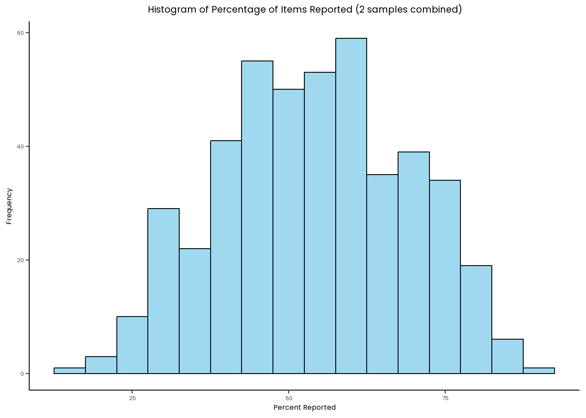

Data Analysis: CONSORT Adherence Among Behavioural Addiction RCTs
Author
Rob Heirene
Published
June 28, 2024
Load required packages
Load in packages using groundhog to ensure consistency of the versions used here:
Show code
# Install and load the groundhog package to ensure consistency of the package versions used here:# install.packages("groundhog") # Installlibrary(groundhog) # Load# List desired packages:packages <-c('tidyverse', # Clean, organise, and visualise data'kableExtra', # Make tables'formattable', # Add visualisations to tables'gt', # Alternative table options'gtExtras', # Add colours to gt tables'gtsummary', # Create summary tables'scales', # Allows for the removal of scientific notation in axis labels'plotly', # Add interactive elements to figures'htmlwidgets', # Make plotly plots HTML format'ggrain', # Make rain cloud plots'waffle', # make waffle plots for proportions'networkD3', # Make Sankey plots to show relationships'patchwork', # Join plots in multipanel layouts'pwr', # Check statistical power'car', # Perform ANCOVA stats tests'rstatix', # Perform ANCOVA stats tests'ggpubr', # Plots for linearity checks 'broom', # Print summaries of statistical test outputs'psych', # get detailed summary figures to Supplement statistical tests'sysfonts', # Special fonts for figures'showtext', # Special fonts for figures'ggstatsplot', # Plots with statistical outputs'janitor', # Make column names consistent format'caret', # Compute model performance indices'sessioninfo', # Detailed session info for reproducibility"osfr","readxl","googlesheets4",# Access data from Google sheets"Gmisc", # Produce prisma flow diagram'grid', # Produce prisma flow diagram"glue", # Produce prisma flow diagram"httpuv", # supports access to Google sheets"irr", # Compute interrater reliability stats"apa", # print test results in apa format"apaTables", # print test results in apa format"ggh4x", # truncate graph axis lines"truncnorm"# Generate normally distributed data with limits)# Load desired package with versions specific to project start date:groundhog.library(packages, "2024-05-29")
Setup presentation & graph specifications
Set up a standard theme for plots/data visualisations:
Show code
# Load new font for figures/graphsfont_add_google("Poppins")font_add_google("Reem Kufi", "Reem Kufi")font_add_google("Share Tech Mono", "techmono")windowsFonts(`Segoe UI`=windowsFont('Segoe UI'))showtext_auto()showtext_auto(enable =TRUE)# Save new theme for figures/graphs.This will determine the layout, presentation, font type and font size used in all data visualisations presented here:plot_theme<-theme_classic() +theme(text=element_text(family="Poppins"),plot.title =element_text(hjust =0.5, size =16),plot.subtitle =element_text(hjust =0.5, size =13),axis.text =element_text(size =10),axis.title =element_text(size =12),plot.caption =element_text(size =12),legend.title=element_text(size=12), legend.text=element_text(size=10) )
Load data from Google Sheets
We’ll first loading two datasheets: one for title and abstract screening and one for full text screening. The original data files were stored on Google Sheets. Load in the data from Google Sheets and save it locally so it will be committed to git and then we (and anyone else) can load from there in future. In the interest of transparency, I have left all code included here but commented out the downloading and saving from GS.
Show code
# Title and abstract screening data:# title_abstract_screening_temp <- googlesheets4::read_sheet("https://docs.google.com/spreadsheets/d/1XxEx_HbsZi9d7YLJRDvjwvpZ0eWHild8G3TT-NTzus8/edit?gid=34341577#gid=34341577", "T&A Screening FINAL") %>%# as_tibble() # # head(title_abstract_screening_temp)# # title_abstract_screening_temp <- title_abstract_screening_temp %>% mutate(`Study no.` = unlist(`Study no.`))# # write_csv(title_abstract_screening_temp, "Data/title_abstract_screening_temp.csv")title_abstract_screening_temp_url <-"https://raw.githubusercontent.com/rheirene/behav_addic_consort_adherence_outcome_switch/main/Data/title_abstract_screening_temp.csv"# Note: Use link from page after selecting "raw" button, otherwise it loads all page data title_abstract_screening_temp <-read_csv(title_abstract_screening_temp_url) %>%as_tibble()head(title_abstract_screening_temp)# Fulltext screening data:# full_text_screening_temp <- googlesheets4::read_sheet("https://docs.google.com/spreadsheets/d/1XxEx_HbsZi9d7YLJRDvjwvpZ0eWHild8G3TT-NTzus8/edit?gid=1250766693#gid=1250766693", "Full Text Screening FINAL") %>%# as_tibble() # head(full_text_screening_temp)# full_text_screening_temp <- full_text_screening_temp %>% mutate(`Study no.` = unlist(`Study no.`))# write_csv(full_text_screening_temp, "Data/full_text_screening_temp.csv")full_text_screening_temp_url <-"https://raw.githubusercontent.com/rheirene/behav_addic_consort_adherence_outcome_switch/main/Data/full_text_screening_temp.csv"# Note: Use link from page after selecting "raw" button, otherwise it loads all page data full_text_screening_temp <-read_csv(full_text_screening_temp_url) %>%as_tibble()head(full_text_screening_temp)
Clean & Prepare Data
Let’s clean and prepare this data for analysis, starting with the title and abstract screening dataset:
full_text_screening <- full_text_screening_temp %>%clean_names() %>%filter(study_no !="remove") %>%# Remove the row separating the old and new samplesselect(-x11) # Remove empty column that occurs as a result of two merged columns becoming one when loaded into R.# View(full_text_screening) # check updated dataset
Inter-coder reliability
In our preregistration, we stated the following:
For transparency, we will report the levels of inter-researcher consistency in the selection process using Krippendorf’s alpha. Specifically, we will use the “irr” R package and associated kripp.alpha() function to compute Krippendorf’s alpha for the entire sample of title and abstract and full-text screening decisions.
Let’s go ahead and calculate Krippendorf’s alpha for title and abstract screening and then full text screening.
Provide a statement summarising these test outputs for directly inclusion in manuscript:
At title and abstract level, we achieved a Krippendorf’s \(/alpha\) level of 0.707 (198 articles, 2 raters). At full- text level, we achieved a Krippendorf’s \(/alpha\) level of 0.795 (95 articles, 2 raters).
Flowchart
Now we have loaded and cleaned the screening spreadsheets, we can use this to create a computationally reproducible flowchart of the studies screening and selection process.
To do this, we’ll need to isolate key figures, like the number of studies assessed and included at title and abstract level and the full text screening level. Let’s create these figures:
Show code
# Number of articles screened at title and abstract level:n_total_title_abstract <-nrow(title_abstract_screening)# Number of articles included at title and abstract level:n_included_title_abstract <- title_abstract_screening %>%filter(full_text_screen =="TRUE") %>%nrow()# Number of articles excluded at title and abstract level:n_excluded_title_abstract <- title_abstract_screening %>%filter(full_text_screen =="FALSE") %>%nrow()# quickly check the included and excluded articles sum to the total of all articles:# n_total_title_abstract# n_excluded_title_abstract+n_included_title_abstract# Number of articles screened at full text level (should be the same as above, but good to check):n_total_full_text <- full_text_screening %>%nrow()# Number of articles included at full text screening level:n_included_full_text <- full_text_screening %>%filter(include_final_decision ==1) %>%nrow()# Number of articles excluded at full text screening level:n_excluded_full_text <- full_text_screening %>%filter(include_final_decision ==0) %>%nrow()# Reasons for exclusion at full text screening level:full_text_exclusion_reasons<- full_text_screening %>%filter(include_final_decision ==0) %>%count(reason_for_exlcusion_code) %>%rename(reason =1) %>%arrange(desc(n))
Now use the data from above to develop a PRISMA flowchart:
The original data files used for scoring articles were stored on Google Sheets. Load in the data from Google Sheets and save it locally so it will be comiited to git and then we (and anyone else) can load from there in future:
Show code
# # Study 1 abstract adherence data# abstract_adherence_data<- googlesheets4::read_sheet("https://docs.google.com/spreadsheets/d/1XxEx_HbsZi9d7YLJRDvjwvpZ0eWHild8G3TT-NTzus8/edit?gid=674745925#gid=674745925", "Abstract - CONSORT adherence coding") # # # head(abstract_adherence_data)# # View(abstract_adherence_data)# abstract_adherence_data <- abstract_adherence_data %>% mutate(`Study no.` = unlist(`Study no.`))# # write_csv(abstract_adherence_data, "Data/abstract_adherence_data.csv")abstract_adherence_data_url <-"https://raw.githubusercontent.com/rheirene/behav_addic_consort_adherence_outcome_switch/main/Data/abstract_adherence_data.csv"# Note: Use link from page after selecting "raw" button, otherwise it loads all page data abstract_adherence_data <-read_csv(abstract_adherence_data_url) %>%as_tibble()
Clean & Prepare Data
Show code
Study1_abstract_adherence_data <- abstract_adherence_data %>%clean_names() %>%filter(study_no !="remove") %>%# filter out row separating older and newer samplemutate(x3_1_methods_participants_participants_setting =word(x3_1_methods_participants_participants_setting, 1)) %>%# Isolate single code from valuesmutate(x3_2_methods_interventions =word(x3_2_methods_interventions, 1)) # Isolate single code from values# View(Study1_abstract_adherence_data) # check recoding
Study1_abstract_adherence_data %>%select(-'funding_later') %>%pivot_longer(cols =4:19, names_to ="Item", values_to ="value") %>%filter(!is.na(value)) %>%filter(value !="N/A") %>%count(Item, value) %>%# Ensure all combinations of Item and value existgroup_by(Item) %>%mutate(percent =round(n/sum(n)*100,2)) %>%mutate(value =factor(value, levels =c("yes", "no"))) %>%pivot_wider(names_from = value, values_from =c(n, percent)) %>%mutate(across(everything(), ~replace_na(.x, 0))) %>%full_join(abstract_items_data_frame) %>%ungroup() %>%select(-Item, -percent_no) %>%rename(Item = Item_nice) %>%select(Item, n_yes, everything()) %>%gt() %>%cols_align(align ="right",columns =vars(Item)) %>%cols_align(align ="center",columns =vars(2:4)) %>%gt_color_rows(percent_yes, palette =c("#F0FFF7", "#289998")) %>%cols_label(percent_yes ~"Percent reported", n_no ~"Not reported", n_yes ~"Reported") %>%tab_header(title =md("**Table 1. Number & percentage of CONSORT items reported in study abstracts**")) %>%tab_spanner(label ="Adherence",columns =2:4) %>%tab_options(data_row.padding =px(2.7)) %>%cols_align(align ="left",columns =vars(Item)) %>%cols_align(align ="center",columns =vars(2:4))%>%tab_footnote(footnote ="This was only scored if reported in the abstract or alongside other article meta-data towards the top of the article. A further 46 studies (73%) reported funding later in the article.",locations =cells_body(columns =vars(Item),rows = Item =="Funding" ) )
Table 1. Number & percentage of CONSORT items reported in study abstracts
Item
Adherence
Reported
Not reported
Percent reported
Author contact details
57
6
90.48
Trial design
12
51
19.05
Methods - sample & setting
6
57
9.52
Methods - interventions
62
1
98.41
Methods - objective
60
3
95.24
Methods - outcomes
21
42
33.33
Methods - randomisation
0
63
0.00
Methods - blinding
14
49
22.22
Results - number analysed
20
43
31.75
Results - recruitment
0
63
0.00
Results - no. randomised
2
61
3.17
Results - outcomes
7
56
11.11
Results - harms
2
61
3.17
Conclusion
60
3
95.24
Trial registration
17
46
26.98
Funding1
8
55
12.70
1 This was only scored if reported in the abstract or alongside other article meta-data towards the top of the article. A further 46 studies (73%) reported funding later in the article.
Compute the mean and median percentage across all abstract items:
Show code
Study1_abstract_adherence_data %>%pivot_longer(cols =4:19, names_to ="Item", values_to ="value") %>%filter(!is.na(value)) %>%filter(value !="N/A")%>%count(Item, value) %>%# Ensure all combinations of Item and value existgroup_by(Item) %>%mutate(percent =round(n/sum(n)*100,2)) %>%mutate(value =factor(value, levels =c("yes", "no"))) %>%pivot_wider(names_from = value, values_from =c(n, percent)) %>%mutate(across(everything(), ~replace_na(.x, 0))) %>%ungroup() %>%summarise(mean(percent_yes),median(percent_yes))
When it comes to the funding item for abstracts, we scored this only if they reported the funding on the first page, or at least in with the rest of the upfront article details. How many articles reported funding but didn’t included in the abstract:
# Study 1 CONSORT Adherence data# adherence_data<- googlesheets4::read_sheet("https://docs.google.com/spreadsheets/d/1XxEx_HbsZi9d7YLJRDvjwvpZ0eWHild8G3TT-NTzus8/edit?gid=450039881#gid=450039881", "CONSORT Adherence coding") # # head(adherence_data)# # View(adherence_data)# # adherence_data <- adherence_data %>% mutate(`Study no.` = unlist(`Study no.`))# # write_csv(adherence_data, "Data/adherence_data.csv")adherence_data_url <-"https://raw.githubusercontent.com/rheirene/behav_addic_consort_adherence_outcome_switch/main/Data/adherence_data.csv"# Note: Use link from page after selecting "raw" button, otherwise it loads all page data adherence_data <-read_csv(adherence_data_url) %>%as_tibble()head(adherence_data)names(adherence_data)
Clean & Prepare Data
Show code
colnames(adherence_data)[c(10:46)] <-paste('Item', colnames(adherence_data)[c(10:46)], sep ='_') # add item prefix to all consort items to make later selection easierStudy1_CONSORT_adherence_data <- adherence_data %>%mutate(`Item_14b - Results`=ifelse(`Item_14b - Results`%in%c("n\nA?", "y\nA?"), "n/a",`Item_14b - Results`)) %>%# Fix temporary codingclean_names() %>%# Make names of the behavioural addictions consistent:mutate(behavioural_addiction =case_when(behavioural_addiction =='Online gaming'~"Gaming", behavioural_addiction =='online gaming'~"Gaming",TRUE~ behavioural_addiction)) %>%filter(study_no !="remove") %>%# filter out row separating older and newer samplemutate(study_no =as.double(study_no)) # View(Study1_CONSORT_adherence_data) # check recoding
Produce summary figures
In our preregistration we stated the following:
The following summary outcomes will be quantitatively synthesised and require no criteria to be met:
Mean, standard deviation, median, and range of CONSORT items reported for the entire sample of studies
The total number of studies that report each CONSORT item
Provided there are ≥2 studies for each group/category, the following summary outcomes will also be reported:
Mean, standard deviation, median, and range of CONSORT items reported by studies published in each journal
Mean, standard deviation, median, and range of CONSORT items reported by studies published in journals that do and do not endorse CONSORT
Mean, standard deviation, median, and range of CONSORT items reported by gambling and gaming studies.
Mean, standard deviation, median, and range of CONSORT items reported by studies within each year of publication present in the sample (2011-2020). [Note that we later extended this to early 2024]
Let’s focus on computing the above outcomes.
Summary for the entire sample of studies
Mean, standard deviation, median, and range of CONSORT items reported for the entire sample of studies
We will now calculate these figures, as well as the percentage of CONSORT items reported in each study as there are a varying number of potentially eligible items across studies, depending on the study design (for example, item 11b related to blinding and the similarity between interventions groups is only relevant if blinding was used).
Start by putting the data in a format where we can calculate these values as this will be useful for analyses later on:
Show code
# Specify the columns to apply our percentage calculation to:columns_to_apply =c('item_1a_title_abst','item_1b_title_abst', 'item_2a_intro','item_2b_intro','item_3a_methods','item_3b_methods','item_4a_methods','item_4b_methods','item_5_methods','item_6a_methods','item_6b_methods','item_7a_methods','item_7b_methods','item_8a_methods','item_8b_methods','item_9_methods','item_10_methods','item_11a_methods','item_11b_methods','item_12a_methods','item_12b_methods','item_13a_results','item_13b_results','item_14a_results','item_14b_results','item_15_results','item_16_results','item_17a_results','item_17b_results','item_18_results','item_19_results','item_20_discussion','item_21_discussion','item_22_discussion','item_23_other_info','item_24_other_info','item_25_other_info')# Develop some nicely written version of the items for use as we go through:items_data_frame =data.frame(Item =c(columns_to_apply), Item_nice =c("1a - Title & abstract","1b - Title & abstract","2a - Introduction","2b - Introduction","3a - Methods","3b - Methods","4a - Methods","4b - Methods","5 - Methods","6a - Methods","6b - Methods","7a - Methods","7b - Methods","8a - Methods","8b - Methods","9 - Methods","10 - Methods","11a - Methods","11b - Methods","12a - Methods","12b - Methods","13a - Results","13b - Results","14a - Results","14b - Results","15 - Results","16 - Results","17a - Results","17b - Results","18 - Results","19 - Results","20 - Discussion","21 - Discussion","22 - Discussion","23 - Other information","24 - Other information","25 - Other information"))CONSORT_adherence_data_with_study_totals <- Study1_CONSORT_adherence_data %>%# Recode y\n\na values:mutate_at(vars(c(columns_to_apply)),~case_when( . =="y"~1, . =="n"~0, . =="n/a"~NA,TRUE~as.numeric(.) )) %>%mutate(total_adherence_absolute =rowSums(select(., all_of(columns_to_apply)), na.rm =TRUE)) %>%mutate(percent_reported =rowSums(select(., all_of(columns_to_apply)) ==1, na.rm =TRUE) /rowSums(!is.na(select(., all_of(columns_to_apply)))) *100)# Check recoding was accurate:# CONSORT_adherence_data_with_study_totals %>%# select(10:45, total_adherence_absolute, percent_reported) %>%# View()
Okay, so our 63 papers were published across 32 different outlets [numbers are code generated].
Next, we’ll produce adherence scores for the journal with two or more articles in:
Show code
# First extracted the journal names for those with two or more publications:journals_two_or_more <- Study1_abstract_adherence_data %>%# (we need this for the cleanest journal names)mutate(study_no =as.double(study_no)) %>%select(title = title, journal, study_no) %>%full_join(Study1_CONSORT_adherence_data) %>%count(journal) %>%arrange(desc(n)) %>%filter(n >1) %>%pull(journal)# Now use these Journal names to filter in the articles published in these journals and provide summary scores:# Study 1 abstract adherence datatbL_summary_journal <- Study1_abstract_adherence_data %>%mutate(study_no =as.double(study_no)) %>%select(title = title, journal, study_no) %>%full_join(CONSORT_adherence_data_with_study_totals, join_by(title)) %>%filter(journal %in% journals_two_or_more) %>%# Include only studies published in journals that have two or more articlles in the samplegroup_by(journal) %>%summarise(mean_total_adherence_absolute =mean(total_adherence_absolute, na.rm =TRUE),sd_total_adherence_absolute =sd(total_adherence_absolute, na.rm =TRUE),median_total_adherence_absolute =median(total_adherence_absolute, na.rm =TRUE),min_total_adherence_absolute =min(total_adherence_absolute, na.rm =TRUE),max_total_adherence_absolute =max(total_adherence_absolute, na.rm =TRUE),mean_percent_reported =mean(percent_reported, na.rm =TRUE),sd_percent_reported =sd(percent_reported, na.rm =TRUE),median_percent_reported =median(percent_reported, na.rm =TRUE),min_percent_reported =min(percent_reported, na.rm =TRUE),max_percent_reported =max(percent_reported, na.rm =TRUE),N =n() ) %>%arrange(desc(mean_total_adherence_absolute)) %>%mutate(mean_sd =paste(round(mean_total_adherence_absolute, 2), " (", round(sd_total_adherence_absolute, 2), ")", sep =""),mean_percent_reported =round(mean_percent_reported, 2),median_min_max =paste(median_total_adherence_absolute, " (", min_total_adherence_absolute, "-", max_total_adherence_absolute, ")", sep ="") ) %>%select(Characteristic = journal, N,"M (SD)"= mean_sd, "Mdn (range)"= median_min_max,"M % reported"= mean_percent_reported)gt(tbL_summary_journal) %>%# gt_plt_bar_pct(# column = 4,# scaled = TRUE,# labels = TRUE,# fill = "forestgreen"# ) %>% gt_color_rows(5, palette =c("#F0FFF7", "#289998")) %>%tab_options(data_row.padding =px(3)) %>%cols_align(align ="left",columns =vars(Characteristic)) %>%cols_align(align ="center",columns =vars(2:5))
Characteristic
N
M (SD)
Mdn (range)
M % reported
PloS one
2
27 (2.83)
27 (25-29)
79.41
Addiction
3
26.67 (0.58)
27 (26-27)
78.55
Journal of Consulting and Clinical Psychology
4
22.25 (4.03)
21 (19-28)
67.23
Journal of Behavioral Addictions
5
22.2 (5.07)
24 (14-27)
67.16
Addictive Behaviors
4
19.75 (5.68)
18 (15-28)
58.59
Journal of Gambling Studies
17
17.18 (4.82)
18 (10-27)
52.51
Journal of Gambling Issues
2
16 (0)
16 (16-16)
50.00
Journal of Psychopharmacology
2
15.5 (3.54)
15.5 (13-18)
45.41
CONSORT endorsement
In our preregistration, we stated the following:
Provided there are ≥ 51 studies published in journals that do endorse CONSORT and ≥ 50 studies in journals that do not, we will conduct an independent samples Welch’s t-test to compare the mean number of reported items between the two journal types (i.e., endorse CONSORT vs. does not endorse CONSORT). The required sample size is based on a power calculation for a one-tailed t-test (alpha = 0.05, power = 0.8, medium effect size [d] = 0.5) using G*Power software version 3.1 (Faul et al., 2009), which indicated that 51 studies per group would be required. However, our preliminary searches indicate that we are unlikely to achieve these group sizes.
We know from our analyses above that we have not reached more than 51 articles published in CONSORT endorsing journals and 51 articles published in non-CONSORT endorsing journals, so we’ll simply produce some summary figures, including mean difference with SD.
The CONSORT endorsement data is actually in the full-text screening spreadsheet (minor waste of time doing it for all articles screened at this level), so we’ll load this in and then keep only the studies included in the review.
Compute mean difference between journals that do and do not endorse consort:
Show code
# Summarise Adherence rates for each consort group:consort_endorse_summary_stats <- CONSORT_adherence_data_with_study_totals %>%left_join(full_text_screening, join_by(title)) %>%mutate(consort =case_when( consort ==TRUE~"Endorses CONSORT", consort ==FALSE~"No endorsement" )) %>%group_by(consort) %>%summarise(mean_total_adherence =mean(total_adherence_absolute, na.rm =TRUE),sd_total_adherence =sd(total_adherence_absolute, na.rm =TRUE),mean_percent_reported =mean(percent_reported, na.rm =TRUE),sd_percent_reported =sd(percent_reported, na.rm =TRUE),n =n() # capture the sample size for each group ) %>%ungroup()# Calculate the difference in means and pooled standard deviation as an approximationdifference_stats <- consort_endorse_summary_stats %>%summarise(difference_mean_total_adherence =diff(mean_total_adherence),pooled_sd_total_adherence =sqrt(((n[1] -1) * sd_total_adherence[1]^2+ (n[2] -1) * sd_total_adherence[2]^2) / (n[1] + n[2] -2)),difference_mean_percent_reported =diff(mean_percent_reported),pooled_sd_percent_reported =sqrt(((n[1] -1) * sd_percent_reported[1]^2+ (n[2] -1) * sd_percent_reported[2]^2) / (n[1] + n[2] -2)) )# View the calculated differences and pooled SDsdifference_stats %>%pivot_longer(cols =everything(),names_to ="Metric",values_to ="Value") %>%gt()
Metric
Value
difference_mean_total_adherence
0.7315217
pooled_sd_total_adherence
5.3161238
difference_mean_percent_reported
1.9442103
pooled_sd_percent_reported
15.1334369
Studies published in journals endorsing CONSORT had a slightly lower mean percentage of relevant items reported compared to studies published in non-endorsing journals (Mdifference = -1.94, SDpooled = 15.13).
This outcome is quite unexpected (Journals that do not endorse consort scored higher than those that do on adherence),although the difference is not very large. Still, I’m going to explore the data here and check for any potential errors/explanations:
European Archives of Psychiatry and Clinical Neuroscience
1
21 (NA)
21 (21-21)
63.64
Brain: A Journal of Neurology
1
19 (NA)
19 (19-19)
57.58
Family Process
1
19 (NA)
19 (19-19)
55.88
International Journal of Environmental Research and Public Health
1
19 (NA)
19 (19-19)
59.38
Journal of Psychiatry & Neuroscience
1
19 (NA)
19 (19-19)
57.58
Psychology of Addictive Behaviors
1
19 (NA)
19 (19-19)
54.29
Journal of Gambling Studies
17
17.18 (4.82)
18 (10-27)
52.51
Asian Journal of Psychiatry
1
17 (NA)
17 (17-17)
53.12
The journal of Clinical Psychiatry
1
17 (NA)
17 (17-17)
51.52
Journal of Gambling Issues
2
16 (0)
16 (16-16)
50.00
Journal of Psychopharmacology
2
15.5 (3.54)
15.5 (13-18)
45.41
Brain Connectivity
1
14 (NA)
14 (14-14)
42.42
Journal of Integrative and Complementary Medicine
1
14 (NA)
14 (14-14)
43.75
No endorsement
Scientific Reports
1
29 (NA)
29 (29-29)
85.29
Psychiatry Research
1
26 (NA)
26 (26-26)
76.47
Journal of Consulting and Clinical Psychology
4
22.25 (4.03)
21 (19-28)
67.23
Journal of Behavioral Addictions
5
22.2 (5.07)
24 (14-27)
67.16
The World Journal of Biological Psychiatry
1
21 (NA)
21 (21-21)
58.33
Addictive Behaviors
4
19.75 (5.68)
18 (15-28)
58.59
American Journal of Orthopsychiatry
1
19 (NA)
19 (19-19)
59.38
European Neuropsychopharmacology
1
19 (NA)
19 (19-19)
57.58
Annals of Clinical Psychiatry
1
16 (NA)
16 (16-16)
48.48
Human Psychopharmacology: Clinical and Experimental
1
14 (NA)
14 (14-14)
42.42
Computer Methods and Programs in Biomedicine
1
12 (NA)
12 (12-12)
37.50
Neuropharmacology
1
12 (NA)
12 (12-12)
37.50
eNeuro
1
12 (NA)
12 (12-12)
34.29
Combined outcomes
Show code
bind_rows(tbL_summary_all,tbL_summary_addiction,tbL_summary_funding,tbl_summary_consort,tbL_summary_journal) %>%gt() %>%gt_color_rows(5, palette =c("#F0FFF7", "#289998"),domain =c(35, 85)) %>%tab_options(data_row.padding =px(3)) %>%cols_align(align ="left",columns =vars(Characteristic)) %>%cols_align(align ="center",columns =vars(2:5)) %>%tab_header(title =md("**Table 3. Summary of CONSORT adherence in reviewed studies**")) %>%tab_row_group(label =md("_**Behavioural addiction**_"),rows =2:3) %>%# change to 1:2 when 1b addedtab_row_group(label =md("_**Funding source**_"),rows =4:7) %>%tab_row_group(label =md("_**Journal endorsement**_"),rows =8:9) %>%tab_row_group(label =md("_**Journal**_"),rows =10:17) %>%row_group_order(groups =c(NA,"_**Behavioural addiction**_","_**Funding source**_","_**Journal endorsement**_","_**Journal**_")) %>%tab_spanner(label ="Adherence",columns =3:5) %>%cols_label(N =md("*N*"),'M (SD)'=md("*M* (*SD*)"),'Mdn (range)'=md("*M* (range)"),'M % reported'=md("*M* %<br>reported"),Characteristic ="") %>%tab_footnote(footnote ="Darker colours indicate greater adherence to CONSORT reporting guidelines.",locations =cells_column_labels(columns =5)) %>%tab_footnote(footnote ="Percentages calculated as the proportion of relevant items, excluding NA values.",locations =cells_column_labels(columns =5)) %>%tab_footnote(footnote ="Rates are reported for journals publishing 2 or more articles.",locations =cells_group(groups ="_**Journal**_")) %>%opt_footnote_marks(marks ="standard")
Table 3. Summary of CONSORT adherence in reviewed studies
N
Adherence
M (SD)
M (range)
M %
reported*,†
Overall
63
19.49 (5.29)
19 (10-30)
58.61
Behavioural addiction
Gambling
52
19.69 (5.53)
19 (10-30)
59.05
Gaming
11
18.55 (4.01)
19 (12-27)
56.49
Funding source
Gambling Industry
4
26 (2.94)
26.5 (22-29)
74.91
None
3
20.33 (1.15)
21 (19-21)
60.99
Other
47
19.77 (5.01)
19 (12-30)
59.72
Can't tell
9
14.89 (4.76)
12 (10-22)
44.75
Journal endorsement
No endorsement
23
19.96 (5.46)
19 (12-29)
59.84
Endorses CONSORT
40
19.23 (5.23)
19 (10-30)
57.90
Journal‡
PloS one
2
27 (2.83)
27 (25-29)
79.41
Addiction
3
26.67 (0.58)
27 (26-27)
78.55
Journal of Consulting and Clinical Psychology
4
22.25 (4.03)
21 (19-28)
67.23
Journal of Behavioral Addictions
5
22.2 (5.07)
24 (14-27)
67.16
Addictive Behaviors
4
19.75 (5.68)
18 (15-28)
58.59
Journal of Gambling Studies
17
17.18 (4.82)
18 (10-27)
52.51
Journal of Gambling Issues
2
16 (0)
16 (16-16)
50.00
Journal of Psychopharmacology
2
15.5 (3.54)
15.5 (13-18)
45.41
* Darker colours indicate greater adherence to CONSORT reporting guidelines.
† Percentages calculated as the proportion of relevant items, excluding NA values.
‡ Rates are reported for journals publishing 2 or more articles.
Yearly data
Mean, standard deviation, median, and range of CONSORT items reported by studies within each year of publication present in the sample (2011-2020). [Note that we later extended this to early 2024]
We can compute the summary statistics for each year to be consistent with our preregistration, but this would probably look better as a figure/graph in the actual paper:
Show code
CONSORT_adherence_data_with_study_totals %>%rename(Year = date_published) %>%tbl_summary(include =c(total_adherence_absolute, percent_reported),type =all_continuous() ~"continuous2",by = Year, # split table by yearstatistic =all_continuous() ~c("{mean} ({sd})","{median} ({min}, {max})"),label =list(total_adherence_absolute ='Total no. items reported',percent_reported ='% of releveant items reported')) %>%# add_overall() %>%modify_header(label ="") %>%# update the column headerbold_labels() %>%modify_caption("**Summary statistics for the number of CONSORT items reported in the sample grouped by year of publication**")
Summary statistics for the number of CONSORT items reported in the sample grouped by year of publication
2010, N = 1
2011, N = 2
2012, N = 3
2013, N = 2
2014, N = 2
2015, N = 4
2016, N = 9
2017, N = 3
2018, N = 6
2019, N = 6
2020, N = 8
2021, N = 4
2022, N = 4
2023, N = 9
Total no. items reported
Mean (SD)
13.0 (NA)
13.5 (3.5)
20.7 (3.8)
16.0 (7.1)
13.5 (4.9)
20.0 (7.8)
17.6 (3.9)
20.7 (2.5)
20.7 (7.0)
21.0 (5.1)
21.5 (5.1)
19.8 (6.9)
20.8 (4.2)
20.3 (5.2)
Median (Range)
13.0 (13.0, 13.0)
13.5 (11.0, 16.0)
19.0 (18.0, 25.0)
16.0 (11.0, 21.0)
13.5 (10.0, 17.0)
19.5 (11.0, 30.0)
16.0 (12.0, 23.0)
21.0 (18.0, 23.0)
21.0 (12.0, 29.0)
20.0 (15.0, 28.0)
21.0 (12.0, 27.0)
18.0 (14.0, 29.0)
19.0 (18.0, 27.0)
19.0 (14.0, 28.0)
% of releveant items reported
Mean (SD)
39 (NA)
41 (10)
61 (11)
46 (17)
41 (15)
60 (21)
53 (10)
63 (6)
62 (20)
62 (15)
64 (15)
59 (19)
64 (14)
62 (14)
Median (Range)
39 (39, 39)
41 (34, 48)
59 (51, 74)
46 (34, 58)
41 (30, 52)
61 (33, 86)
50 (38, 66)
64 (56, 68)
64 (38, 85)
59 (44, 82)
64 (34, 81)
54 (42, 85)
58 (55, 84)
59 (44, 80)
Plot adherence over time:
Show code
pdf(file ="Figures/CONSORT_adherence_by_year.pdf", # The directory to save the file inwidth =6.66, # The width of the plot in inchesheight =3.65) # The height of the plot in inchesadherence_by_year_plot_data <- CONSORT_adherence_data_with_study_totals %>%rename(Year = date_published) %>%group_by(Year) %>%summarise(percent_reported_mean =mean(percent_reported),SD_mean =sd(percent_reported),Count =n())# create base plot:adherence_by_year_plot_base <- CONSORT_adherence_data_with_study_totals %>%rename(Year = date_published) %>%ggplot() +geom_point(aes(x = Year, y = percent_reported), color ="grey", size =1, position =position_dodge(width =1)) +geom_point(data = adherence_by_year_plot_data, aes(x = Year, y = percent_reported_mean), color ="dodgerblue", size =3) +# geom_errorbar(aes(x = Year, ymin = percent_reported_mean - SD_mean, ymax = percent_reported_mean + SD_mean), data = adherence_by_year_plot_data, width = 0.3, linewidth = 0.7) + # Add error barsgeom_line(data = adherence_by_year_plot_data, aes(x = Year, y = percent_reported_mean), color ="dodgerblue", linewidth =0.8, group =1) +scale_y_continuous(limits =c(0, 100), breaks =seq(0, 100, by =20)) +# Set y-axis limits and breaksscale_x_continuous(breaks =seq(2010, 2023, by =1)) +# Set x-axis breaks for alternating yearslabs(x ="", y ="Percentage of relevant\n items reported") +# Add axis labels and title plot_theme# Add counts and a second axisadherence_by_year_plot <- adherence_by_year_plot_base +geom_bar(data = adherence_by_year_plot_data, aes(x = Year, y = Count), stat ="identity", fill ="grey") +geom_text(data = adherence_by_year_plot_data, aes(x = Year, label = Count, y = Count), vjust =-0.2, size =3, family ="Reem Kufi")+scale_y_continuous(guide ="axis_truncated",sec.axis =dup_axis(breaks =c(0,20), guide ="axis_truncated",name =" No.\n RCTs" ) ) +theme(axis.line.y =element_line(),axis.text.x =element_text(angle =30, hjust =0.6, vjust =0.9))adherence_by_year_plot# Closing the graphical devicedev.off()
Show plot:
Show code
adherence_by_year_plot
Exploratory analysis
Let’s perform and exploratory, non-preregistered analysis to look at the relationship between year of publication and consort adherence.
We can start by checking the assumptions of a parametric correlational test. First, of the two variables normally distributed:
Spearman's rank correlation rho
data: CONSORT_adherence_data_with_study_totals$percent_reported and CONSORT_adherence_data_with_study_totals$date_published
S = 30451, p-value = 0.03294
alternative hypothesis: true rho is not equal to 0
sample estimates:
rho
0.2691197
Using a Spearman’s rank test (datapoints for year of publication were non-normally distributed), we found that the relationship between year of publication and CONSORT adherence was statistically significant: R (61) = 0.27, p = 0.033.
APA package format:
Total number of studies that report each CONSORT item
Now let’s work on computing these figures. Again, we will compute percentages, but this time for each item across all studies:
H1: The reporting completeness of randomised control trials in the behavioural addiction literature, as determined by the number of CONSORT items reported, will be statistically poorer (i.e., fewer mean items) than the reporting quality of randomised control trials in the substance addiction literature.
Our only hypothesis is stated above.
Here’s what we stated in our preregistration about testing this hypothesis:
Provided there are ≥ 28 behavioural addiction studies published overall, we will conduct a Welch’s t-test to compare the mean number of reported items between the behavioural addiction (outcomes from our review) and substance addiction (outcomes from Vassar et al., 2019) randomised controlled trials. Again, this is based on a power calculation for a one-tailed t-test with an estimated allocation rate of 8:1 (substance-behavioural; alpha = 0.05, power = 0.8, medium effect size [d] = 0.5) using G*Power software version 3.1 (Faul et al., 2009), which indicated that a minimum of 28 behavioural addiction and 224 substance addiction studies would be required. Vassar et al.’s (2019) sample will be of sufficient size (394 studies) for this analysis, though we cannot guarantee that there will be a sufficient number of behavioural addictions randomised controlled trials in our sample. As stated earlier, Vassar et al. (2019) appear to have omitted items 6b (“Any changes to trial outcomes after the trial commenced, with reasons” ), 7b (“When applicable, explanation of any interim analyses and stopping guidelines”), 11b (“If relevant, description of the similarity of interventions”), 14b (“Why the trial ended or was stopped”), and 17b (“For binary outcomes, presentation of both absolute and relative effect sizes is recommended”). We will omit these items from our assessment of behavioural addiction randomised controlled trials when performing this comparison. Finally, Vassar et al. (2019) restricted their search to a five-year period (2013/01/01 –2017/12/31) and our search spans a 10-year period (2010/10/06 – 2020/10/06). If we identify ≥ 28 behavioural addiction studies published within the five-year period studied by Vassar et al. (2019) we will undertake two comparisons. First, we will compare our entire sample of studies with Vassar et al.’s studies. Second, we will compare our sample of behavioural addiction studies published between 2013/01/01 and 2017/12/31 with Vassar et al.’s studies for a comparison of behavioural and substance addiction randomised controlled trials over the same time period.
For the above comparison tests, if the assumption of normal distribution is not met, then a Mann-Whitney U test will be performed. Normality will be assessed by using Shapiro-Wilk’s test and p values < 0.05 will be interpreted as evidence of non-normality. Homogeneity of variance is not required for Welch’s t-test and will not be tested.
Each study will have a score for the total number of CONSORT items reported and these will be converted to z scores for outlier detection. Studies with z scores > 3 will be considered outliers. If we perform Welch’s t-test then the number of outliers will be reported and the results from the Welch’s t-test(s) with and without outliers will be reported (that is, if any outliers are identified). If we perform Mann-Whitney U tests (due to non-normality) then outliers will not be tested for, reported, or removed from analyses.
After two years of requesting the data, we received it in late March 2024.
Let’s start by loading in the data and checking how it’s structured and formatted (output hidden for space):
Now let’s focus on trying to merge their data with ours.
We’ll start with making their dataset consistent with ours:
Show code
cleaned_CONSORT_adherence_vassar_data <- CONSORT_adherence_vassar_data %>%rename(title =`Study Title`,date_published =`Year of Publication`,funding_source = Funding,item_1a_title_abst =`1a. Identification as a randomised trial in the title?`,item_1b_title_abst =`1b. Structured summary of trial design, methods, results, and conclusions? (See CONSORT for Abstracts)`,item_2a_intro =`2a. Scientific background and explanation of rationale?`,item_2b_intro =`2b. Specific objectives or hypotheses?`,item_3a_methods =`3a. Description of trial design (such as parallel, factorial) including allocation ratio?`,item_3b_methods =`3b Important changes to methods after trial commencement (such as eligibility criteria), with reasons?`,item_4a_methods =`4a. Eligibility criteria for participants?`,item_4b_methods =`4b. Settings and locations where the data were collected?`,item_5_methods =`5. The interventions for each group with sufficient details to allow replication, including how and when they were actually administered?`,item_6a_methods =`6a. Completely defined pre-specified primary and secondary outcome measures, including how and when they were assessed?`,item_6b_methods =`6b. Any changes to trial outcomes after the trial commenced, with reasons?`,item_7a_methods =`7a. How sample size was determined?`,item_7b_methods =`7b. When applicable, explanation of any interim analyses and stopping guidelines?`,item_8a_methods =`8a. Method used to generate the random allocation sequence?`,item_8b_methods =`8b. Type of randomisation; details of any restriction (such as blocking and block size)?`,item_9_methods =`9. Mechanism used to implement the random allocation sequence (such as sequentially numbered containers),describing any steps taken to conceal the sequence until interventions were assigned?`,item_10_methods =`10. Who generated the random allocation sequence, who enrolled participants, and who assigned participants to interventions`,item_11a_methods =`11a. If done, who was blinded after assignment to interventions (for example, participants, care providers, those CONSORT 2010 checklist Page 2assessing outcomes) and how?`,item_11b_methods =`11b. If relevant, description of the similarity of interventions?`,item_12a_methods =`12a. Statistical methods used to compare groups for primary and secondary outcomes?`,item_12b_methods =`12b. Methods for additional analyses, such as subgroup analyses and adjusted analyses?`,item_13a_results =`13a. For each group, the numbers of participants who were randomly assigned, received intended treatment, andwere analysed for the primary outcome?`,item_13b_results =`13b. For each group, losses and exclusions after randomisation, together with reasons?`,item_14a_results =`14a. Dates defining the periods of recruitment and follow-up?`,item_14b_results =`14b. Why the trial ended or was stopped?`,item_15_results =`15. A table showing baseline demographic and clinical characteristics for each group?`,item_16_results =`16. For each group, number of participants (denominator) included in each analysis and whether the analysis wasby original assigned groups?`,item_17a_results =`17a. For each primary and secondary outcome, results for each group, and the estimated effect size and its precision (such as 95% confidence interval)?`,item_17b_results =`17b. For binary outcomes, presentation of both absolute and relative effect sizes is recommended?`,item_18_results =`18. Results of any other analyses performed, including subgroup analyses and adjusted analyses, distinguishingpre-specified from exploratory?`,item_19_results =`19. All important harms or unintended effects in each group? (See CONSORT for Harms)`,item_20_discussion =`20. Trial limitations, addressing sources of potential bias, imprecision, and, if relevant, multiplicity of analyses?`,item_21_discussion =`21. Generalisability (external validity, applicability) of the trial findings?`,item_22_discussion =`22. Interpretation consistent with results, balancing benefits and harms, and considering other relevant evidence?`,item_23_other_info =`23. Registration number and name of trial registry?`,item_24_other_info =`24. Where the full trial protocol can be accessed, if available?`,item_25_other_info =`25. Sources of funding and other support (such as supply of drugs), role of funders?`) %>%select(-`Timestamp`,-`Name of Data Extractor`,-`Author Name`,-`Name of Journal`, -`26. Does it mention anywhere that the trial data is publicly available/shareable?`,-`If yes, copy and paste here`) %>%mutate(SAMPLE ="Substance addiction RCTs") # Create sample identifying variable
Looking at their data, although they didn’t report the outcomes in the findings, the collected data for every CONSORT outcome. Therefore, despite our preregistered plans, it makes more sense to directly compare their outcomes with ours on all items. We can use the percentage of items reported to ensure our use of NA values doesn’t affect outcomes (despite their reporting, there are no NAs in their dataset?).
Now, let’s prepare our dataset and then merge with Vassar et al.’s:
Shapiro-Wilk normality test
data: CONSORT_adherence_2sample_data$percent_reported
W = 0.98668, p-value = 0.0003401
The data appear to be non-normally distributed. Let’s write this for the manuscript:
We used a Shapiro Wilk’s test to explore the distribution of adherence scores for our sample and found evidence of non-normality (p = 0).
Show code
CONSORT_adherence_2sample_data %>%ggplot(aes(x = percent_reported)) +geom_histogram(binwidth =5, fill ="skyblue", color ="black", aes(y = ..count..), alpha =0.8) +labs(title ="Histogram of Percentage of Items Reported (2 samples combined)",x ="Percent Reported",y ="Frequency") + plot_theme

Again, as per our preregistration, let’s convert our outcome variable to Z scores and check for outliers by filtering the dataset by including only studies with a Z score >3 or < -3.
Okay, let’s start by comparing all the studies in our sample with that of Vassar et al.’s sample, regardless of the year of publication.
Let’s perform a Mann-Whitney-U test to compare the two samples as the scores are non-normally distributed:
Show code
# Perform Mann-Whitney U Testmwu_test_result <-wilcox.test(percent_reported ~ SAMPLE, data=CONSORT_adherence_2sample_data, conf.int=TRUE,conf.level=0.95) # Display the resultsprint(mwu_test_result)
Wilcoxon rank sum test with continuity correction
data: percent_reported by SAMPLE
W = 14622, p-value = 0.02302
alternative hypothesis: true location shift is not equal to 0
95 percent confidence interval:
0.7602267 9.4594513
sample estimates:
difference in location
5.152045
Okay, let’s write up the result for the manuscript:
Using a Mann-Whitney U test, we found that the difference between adherence scores for our sample of behavioural addictions articles (Mdn = 57.6, range = 30.3-85.7) and Vassar and colleagues’ (2019) substance addiction articles (Mdn = 54.1, range = 16.2-89.2) was statistically significant, U = 14622, p = 0.023, mediandiff = 5.15 [95% CIs: 0.76, 9.46]
Period-specific comparison
Okay, let’s see whether they are 28 or more articles in our sample that were published between 2013 and 2017, allowing us to make a more specific comparison with Vassar and colleagues starter. Again this is consistent with our preregistered analysis plan.
Unfortunately, there are only 21 articles in our sample published within the same date range as Vassar et al., and so this is not sufficiently large enough to compare using inferential statistical methods.
We can however, still produce summary statistics for the studies in our sample published within the same date range:
Show code
CONSORT_adherence_2sample_data %>%filter(date_published >2012& date_published <2018) %>%group_by(SAMPLE)%>%summarise(median =round(median(percent_reported),1),min =round(min(percent_reported),1),max =round(max(percent_reported),1) ) %>%gt() %>%tab_header(title =md("**Summary stats for articles published 2013-2017 for comparison with Vasser et al.**"))
Summary stats for articles published 2013-2017 for comparison with Vasser et al.
SAMPLE
median
min
max
Behavioural addiction RCTs
54.6
30.3
85.7
Substance addiction RCTs
54.1
16.2
89.2
Reproducing this analysis
Package stability
To ensure that every time this script runs it will use the same versions of the packages used during the script development, all packages are loaded using the groundhog.library() function from the groundhog package.
Rendering & publishing
This document is rendered in HTML format and published online using Quarto Pub by using the following command in the terminal:
quarto publish quarto-pub
The published online version of this document can be accessed here.
Git/ Github
The repository for the code used here can be accessed via this link.
Git and Github set up following the guide presented here. From this book: